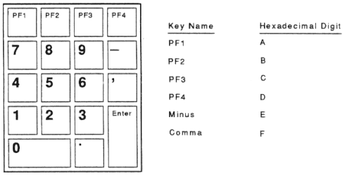

| Chapter 5 | Contents | Chapter 7 |
The VT420 lets you type more characters than appear on your LK401 keyboard. For example, you can type accented characters or a © symbol. This chapter lists the available characters and shows you how to select them.
To enter one of these characters, you type a sequence of keys. Most sequences begin with one of the Compose Character keys. If you use the German keyboard, you use the Group Shift key instead of Compose Character.
This chapter describes the following types of key sequences:
Two basic factors determine the key sequences you can use.
You can type any of the characters in the character set the terminal is currently using. You can select from two multinational sets (DEC Multinational character set or ISO Latin Alphabet No. 1) or many national replacement character sets (NRCs). By default, the VT420 uses the DEC Multinational character set. Chapter 1 describes multinational and national character sets, and Chapter 9 shows each character set.
The character set mode feature in the General Set-Up screen sets the terminal to work with 8-bit multinational or 7-bit NRC sets.
Table 6-1 lists the keyboards that have keys with diacritical marks. Table 6-2 lists all the additional characters for all character sets in the VT420 terminal. Many of these characters include a diacritical mark. For example, Á includes an acute accent.
To enter a character that has a diacritical mark, you press the diacritical key followed by the character. If your keyboard does not have the diacritical key, you must press the Compose Character key followed by the correct key sequence listed in Table 6-2.
To use diacritical keys, you must be using a multinational character set.
| Keyboard | Grave Accent | Acute Accent | Circumflex Accent | Tilde Mark | Umlaut |
|---|---|---|---|---|---|
| Finnish | yes | no | yes | yes | no |
| Flemish | yes | no | yes | yes | yes |
| French/Belgian | yes | no | yes | yes | yes |
| French Canadian | yes | no | yes | yes | no |
| German | yes | yes | yes | yes | yes |
| Portuguese | no | no | no | yes | no |
| Spanish | yes | yes | yes | yes | yes |
| Swedish | yes | no | yes | yes | no |
| Swiss (French) | yes | no | yes | yes | yes |
| Swiss (German) | yes | no | yes | yes | yes |
To enter a Compose Character key sequence:
NOTE: If the Compose Character key does not work, check the setting of the compose key feature in the Keyboard Set-Up screen (Chapter 5).
Example
To type an é:
NOTE: If you try to enter a character that is not available in the current character set, a warning bell sounds. See "Invalid Sequences" in this chapter.
If you select the German Keyboard dialect in the Set-Up Directory screen, the Group Shift replaces the Compose Character key.
Many keys on the German keyboard have a second group of legends on the right half of their keycap. These legends are called Group-2.
To enter a single character from Group-2:
Example
To type an ø:
To enter a series of characters from Group-2:
When you complete a valid compose of group-shift sequence, the character appears on the screen and the Compose or Group Shift indicator at the bottom of the screen turns off. If you use an invalid sequence, the VT420 cancels the sequence and sounds the warning bell.
Some compose characters require that you type the key sequence in the order listed in Table 6-2. If you do not follow the order, the sequence is invalid and the warning bell sounds. If the terminal does not display the character, repeat the sequence exactly as shown in Table 6-2.
NOTE: Pressing a function key cancels a compose or group-shift sequence without sounding the bell.
You can turn the warning bell on or off in the Keyboard Set-Up screen (Chapter 5).
If you accidentally start a key sequence by pressing Compose Character, Group Shift, or a nonspacing diacritical key, press the <×] key. This immediately cancels the sequence.
If you press Compose Character during a compose sequence, a new three-stroke sequence starts from that point. The first sequence is canceled.
If you press any of the following keys during a key sequence, they cancel the sequence and perform their usual function:
This feature is primarily for programmers who are familiar with character coding and hexadecimal representation.
The VT420 uses coded character sets to exchange data with a host computer. The code for a character can be represented by a pair of hexadecimal digits. With the VT420, you can enter any 8-bit code by pressing Compose Character or Group Shift followed by two hexadecimal digits typed on the numeric keypad.
When you press Compose Character or Group Shift, the terminal assigns hexadecimal values to the numeric keypad keys (Figure 6-1). The character set tables in Chapter 9 show you the hexadecimal values for each character in the standard character sets.
NOTE: The character set mode and UPSS features in the General Set-Up screen do not affect hexadecimal compose sequences.
Examples
NOTE: If the terminal mode feature in the General Set-Up screen is set to VT400 Mode, 7 Bit Controls, the 7-bit representation of DCS (ESC P) will be sent.
Invalid Hexadecimal Sequences
If you enter an invalid sequence, the VT420 cancels the sequence and sounds the warning bell. You can turn the warning bell on or off in the Keyboard Set-Up screen (Chapter 5).
|  |
| Character | Sequence | |
|---|---|---|
| *This character is only available when you use the DEC Multinational Character Set. See the UPSS feature in the General Set-Up screen (Chapter 5). | ||
| †These characters are only available when you use the ISO Latin Alphabet No. 1 character set. See the UPSS feature in the General Set-Up screen (Chapter 5). | ||
| " | quotation mark | ¨ (sp) |
| # | number sign | + + |
| ' | apostrophe | ´ (sp) |
| @ | commercial at | A A |
| [ | opening bracket | ( ( |
| \ | backslash | / / or / < |
| ] | closing bracket | ) ) |
| ^ | circumflex accent | ˆ (sp) |
| ` | grave accent | ` (sp) |
| { | opening brace | ( - |
| | | vertical line | / ^ |
| } | closing brace | ) - |
| ~ | tilde | ~ (sp) |
| ¡ | inverted ! | ! ! |
| ¢ | cent sign | C / or C | |
| £ | pound sign | L - or L = |
| ¥ | yen sign | Y - or Y = |
| § | section sign | SO or S! or S0 |
| ¤ | currency sign | XO or X0 |
| © | copyright sign | CO or C0 |
| ª | feminine ordinal | A_ |
| « | open angle brackets | << |
| ° | degree sign | 0^ |
| ± | plus or minus sign | +- |
| ² | superscript 2 | 2^ |
| ³ | superscript 3 | 3^ |
| µ | micro sign | /U |
| ¶ | paragraph sign | P! |
| · | middle dot | .^ |
| ¹ | superscript 1 | 1^ |
| º | masculine ordinal | O_ |
| » | closed angle brackets | >> |
| ¼ | fraction one-quarter | 14 |
| ½ | fraction one-half | 12 |
| ¿ | inverted ? | ?? |
| À | A grave | `A |
| Á | A acute | 'A |
| Â | A circumflex | ^A |
| Ã | A tilde | ~A |
| Ä | A umlaut | ¨A or "A |
| Å | A ring | °A or A* |
| Æ | A E diphthong | AE |
| Ç | C cedilla | C, |
| È | E grave | `E |
| É | E acute | 'E |
| Ê | E circumflex | ^E |
| Ë | E umlaut | ¨E or "E |
| Ì | I grave | `I |
| Í | I acute | 'I |
| Î | I circumflex | ^I |
| Ï | I umlaut | ¨I or "I |
| Ñ | N tilde | ~N |
| Ò | O grave | `O |
| Ó | O acute | 'O |
| Ô | O circumflex | ^O |
| Õ | O tilde | ~O |
| Ö | O umlaut | ¨O or "O |
| Π| O E diphthong* | OE |
| Ø | O slash | O/ |
| Ù | U grave | `U |
| Ú | U acute | 'U |
| Û | U circumflex | ^U |
| Ü | U umlaut | ¨U or "U |
| Ÿ | Y umlaut | ¨Y or "Y |
| ß | German small sharp s | ss |
| à | a grave | `a |
| á | a acute | 'a |
| â | a circumflex | ^a |
| ã | a tilde | ~a |
| ä | a umlaut | ¨a or "a |
| å | a ring | °a or a* (degree sign) |
| æ | a e diphthong | ae |
| ç | c cedilla | c, (comma) |
| è | e grave | `e |
| é | e acute | 'e |
| ê | e circumflex | ^e |
| ë | e umlaut | ¨e or "e |
| ì | i grave | `i |
| í | i acute | 'i |
| î | i circumflex | ^i |
| ï | i umlaut | ¨i or "i |
| ñ | n tilde | ~n |
| ò | o grave | `o |
| ó | o acute | 'o |
| ô | o circumflex | ^o |
| õ | o tilde | ~o |
| ö | o umlaut | ¨o or "o |
| œ | o e diphthong* | oe |
| ø | o slash | o/ |
| ù | u grave | `u |
| ú | u acute | 'u |
| û | u circumflex | ^u |
| ü | u umlaut | ¨u or "u |
| ÿ | y umlaut | ¨y or "y |
| ISO Characters† | ||
| no break space | sp sp | |
| ¦ | broken vertical bar | || or !^ |
| ¬ | logical not | -, |
| | soft (syllable) hyphen | -- |
| ® | registered trademark | RO |
| ¯ | macron | -^ |
| ¾ | three quarters | 34 |
| ÷ | division sign | -: |
| × | multiplication sign | xx |
| ´ | acute accent | '' |
| ¸ | cedilla | ,, |
| ¨ | diaeresis | ¨(sp) or "" |
| Ý | Y acute | 'Y |
| ý | y acute | 'y |
| Þ | capital Icelandic thorn | TH |
| þ | small Icelandic thorn | th |
| Ð | capital Icelandic Eth | -D |
| ð | small Icelandic Eth | -d |